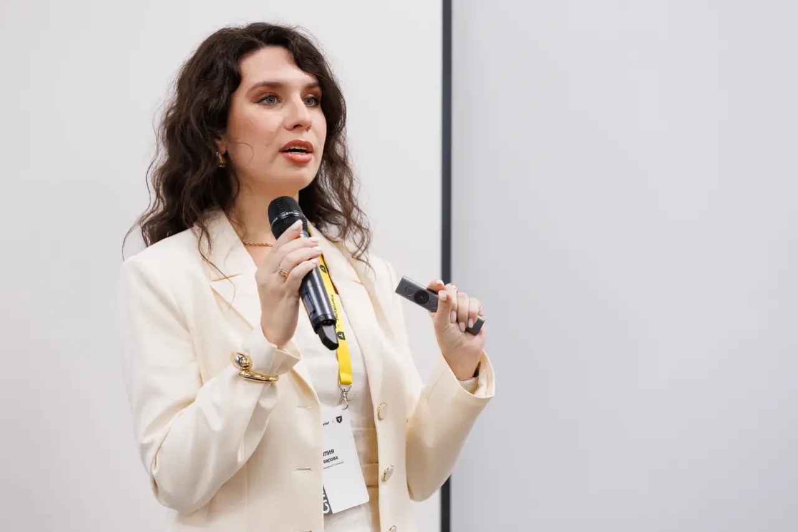

01
Индивидуальные консультации
Карьера, выгорание, сложные решения, конфликты, потеря мотивации и ситуации, где «я уже всё понимаю, но ничего не меняется».
Обсудить запрос →Психология без абстракций — с пониманием разработки, команд, дедлайнов, карьерных развилок и того, как IT устроено изнутри.
Индивидуальная работа · тренинги для команд · выступления · книги для компаний

От личного запроса до работы с целой командой. В каждом формате я соединяю психологическую практику и реальный опыт работы в IT.
Карьера, выгорание, сложные решения, конфликты, потеря мотивации и ситуации, где «я уже всё понимаю, но ничего не меняется».
Обсудить запрос →Профилактика выгорания, сложные разговоры, делегирование, переход в роль руководителя и другие темы, которые влияют на работу команды каждый день.
Запросить программу →Интервью с сотрудниками и первыми лицами, истории команды, employer brand и памятный продукт, который можно дарить сотрудникам, кандидатам и партнёрам.
Обсудить корпоративную книгу →Я знаю IT изнутри и говорю с айтишниками и руководителями на их языке.
Сложные психологические и управленческие вещи объясняю простым человеческим языком — без заумных терминов и нравоучений.
Моя сильная сторона — задавать те вопросы, после которых знакомая ситуация вдруг выглядит иначе.
То, что казалось тупиком, становится понятной и решаемой задачей.
Выступаю на IT-конференциях, веду мастер-классы и работаю с командами — от камерной группы до большого зала.



Мне важны истории живых людей — не идеальные кейсы, а опыт, в котором читатель узнаёт себя.
Книга о выгорании через реальные истории людей из IT: как оно начинается, что человек долго не замечает, что помогает выбраться и что меняется после.
Следить за проектомСерия из трёх книг — часть моей авторской истории до проекта «Дебаг выгорания».
Сейчас развиваю новые документальные и личные книжные проекты — о карьере, выгорании и материнстве.
Подкаст, выступления и заметки о карьере, работе и психологической стороне жизни в IT.
Разговоры о карьерных решениях, профессиональных кризисах и человеческой стороне работы.
Темы на стыке психологии, выгорания, карьеры, менеджмента и жизни внутри IT‑индустрии.
Напишите мне в Telegram — разберёмся, какой формат подойдёт.